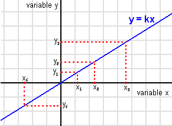

Radio
 De: La Frikipedia, la enciclopedia extremadamente seria.
De: La Frikipedia, la enciclopedia extremadamente seria.
- 5 letras, una de ellas mayúscula según el caso en que dicha palabra se haga de su uso. Por extraño que parezca, todo aquel que escucha esta palabra o la lee, o la menciona, su cerebro crea imágenes de un cacharro con sintonizador y/o/u antena.
- Semejanza con chatarra iónica o con simplemente chatarra metalizada con bobinas de implsoión acelerada con retraso de ondas portadoras y/o emisora.
Hay varios tipos de radio, también como tipos de ondas, televisores, plátanos, echufes, rúters, píxeles y wombats hay.
- Según la Rata Academia Estudiantil, una radio es aquello que nos despierta por la mañana, o aquello que ponemos mientras nos tomamos el café (o colacao) de las mañanas, y casi siempre suele sonar así:
"Buenos días, hoy es Lunes 21, son las siete en punto de la mañana, hace un espléndido día, el tráfico es fluido, y pronto será hora punta, esperemos que tenga una buena mañana...Y ahora las noticias! Han muerto 600 personas en un atentado en Batapuntistán, una bomba ha estallado y ha fallecido el que iva a recibir hoy el premio novel, al anciano más anciano del mundo, también 323 personas han muerto este fin de semana en las carreteras, 2 niños se han salvado pero parece que no se van a recuperar, a medida que pase la semana, una borrasca llegará al extremo sur de la Península con tormentas y anticiclones en el suroeste!!!."
Con lo cual hace que te vayas amargao al noticias... al igual que en la TV
¿Quién inventó la radio? Historia
Marca de la mejor radio mundial
Se especula que fué un invento de un tal Antoñín Marcoñín Pérez, alias "El Vago". Se pasaba la vida en su cuarto, marginado del resto de la umanidad y de sus amigos invisibles, hasta que un día quiso jugar a la NeoGeo, pero sus padres no querían comprarle na hasta que no hiciese nada, y dijo "Y a Diós pongo por testigo, que algo fabricaré con estas manos, que hará que os fascine" (levantando el puño al cielo). Pero Dios se enfadó de que utilizase su nombre en vano ya que había puesto un Copyright, y le lanzó un rayo a Antoñín. Pero le perdonó la vida haciendole prometer que le fabricaría la televisión por cable. Sus numerosos inventos son:(por orden de invención):
- El condón.
- La botella cuántica Don Simon.
- La televisión por cable.
- El Mp3.
- Linux.
- El boli con autocorreción ortográfica y almacén de chuletas.
- Mini discos UMD.
- El cable USB.
- El primer CPU con 120 Gb de memoria, 1245 Mb de RAM, y capacidad para 20.000.000.000,1 archivos porno.
- El windows 95.2.A beta.
- El windows 98.
- El windows 98 segunda edición.
- El windows 2000.
- El windows XD.
- El windows tacto.
- El windows sabor y oído.
- El windows olfato.
- El windows vista.
- La impresora, la bombilla, el telégrafo, el Televisor y el ADSL, (les robó los croquis a sus originales inventores mientras dormían).
- El condón de plata.
- El Bozca y el J&B.
- Y por último, la radio (en tiempos inmemorables, junto con el programa Ponte a prueba).
Esto hizo al más rico del fines psicodélicos.
Le dejaron la radio ya que decían que es una mierda de invento, y que solo un homo Sapiens Sapiens y un Homo Zapping y un Esquimatus Andeandará podría ser tan imbécil como para utilizarlo.
Esto traumatizó a Antoñín, pero al vender algunas radios ya se forraba, aunque Bill Gates ya era megamillonario, y Diox el amo del universo.
Ingredientes para conseguir una radio (de las que suenan)
- Un cazo de varios kms de diámetro.
- 20 gramos de refrigerante.
- 6 gramos de carburante de monóxido de estaño.
- 7 gramos de soludividad divina.
- 5 gotas de sudor de Dios y otras 5 de Diox para compensar.
- Algodón negro de materia oscura.
- 47 gramos de Ácido Tripotásico con un pelín de sal.
- 5 Patas de conejo mutado.
- El primer pelo que tuvistes.
- Un mechón de espagueti de Dios.
- Canas] con caspa de Diox.
- Pelo de la barba y el sombrero de Chuck Norris, y ya que estamos, su bendición también.
- Radiacción gamma, X, y ultravoleta.
- 5 barras de pan cateto untadas con uranio enriquecido, al punto de sal, con jamón serrano y queso manchego con moho.
Estas últimas no hay que depositarlas en el recipiente, solo hay que poseerlas y saber usarlas:
- Un mínimo de 7.684.937.546 neuronas.
- Tener a Antoñín Marco delante para que te diga los pasos a seguir.
- Un manual de instrucciones de papel de lija.
- Un conector Wi-fi, y 1 rúter.
- Una antena parabólica de 34 metros de diametro.
- Un satélite en órbita.
- Un soldador cuántico.
- Imaginación de un niño de 47 años.
- Un Wombat hembra.
- 53 litros de caldo de puchero utilizando al Wombat.
73 litros de ese caldo que has hecho lo guardas por si te hace falta, o por si vienen invitados.
Lo mueves todo con paciencia en la olla durante un tiempo indefinido a fuego lento, y te lo tomas, despues, te compras una radio.
Tipos de Radios
Hay varios tipos de radios cada uno con una característica que les hace único:
- El radio de la bici: Son esos finos palitos con aparencia metálica que se encuentran en las delgadas ruedas de las bicis, no se sabe muy bien para que sirve, pero se especula que es para poder colocar cartelitos de tu cantante favorito, la chuleta del examen de lengua, o para colocar un reflectante que rara vez te salva la vida.
- La radio sonórica: Dícese de un aparáto de sonido y de velocidades cuánticas, en el que la calidad del sonido es proporcional al precio siendo así una ecuación simétrica y transitiva al mismo tiempo dando lugar a una relación entre estables en el sudodicho caso.
- Radio, si si, simplemente, Radio: Es la capacidad de mandar mensajes de última generación, capaz de transmitir sémen a una velocidad descomunal mediante un aparato via satélite con infrarrojos. Normalmente los mensajes son electromagnéticos, con lo cual produce una mejor eyacualicón, y dicho sujeto se sentirá placentero y/o/u omnisciente al haber mandado sudodicho mensaje.
- Radio matemática: Dícese de una delgada, mediana o gruesa línea que una vez trazada, llegada al centro del "asunto" nada más se debería de hacer. Se le asemeja con la varilla de un reloj.
Sencillos y monótonos gráficos y/u/o ecuaciones que no tienen nada que ver
 Sencillo y divertido gráfico. Según Fraga, se visualiza su vejez y su cojera en aumento hasta el fin de los tiempos, al haber valores negativos, la edad de Fraga es negativa, con lo cual fue (o sigue siendo) el ser mas antiguo que a criado y amantado Wombat, también es el aumento de sonoridad de la radio de su MP3, ya que el sonido del Mp3 es proporcional a la edad de Fraga por su sordera inminente
Es la figura mas dificil, su autor fue Amispóteques allá por los años de la creación de los juegos olímpicos en Grecia, el autor se aburría, cojió un trozo de cacho de pedazo de minúsculo cachito de carbón, y dibujo un circulo, y otro y otro, y dibujó una line que iva desde cualquier extremidad inferior de la circunferencia al centro, con lo cual, se creía que había descubierto la pólvora, pero no es así, ese dibujo lo trajeron los Aliens en una caja de Pizza extraviada de 4 estaciones con extra de champiñones y tomate magro con salsa roquefort... una "delicia" en esos tiempos... llamó "radio" a la delgada linea dibujada por que sí, y punto, pa que dar explicaciones.
Mediante esta sencilla, divertida, manejable, y sobretodo satánica ecuasión, sabremos cuantas radios se necesitarán para la dominación del mundo pués.
Este sencillo gráfico, muestra la popularidad que ha ganado la Frikipedia, y el poder ascendente de Chuck Norris junto con su aumento de sueldo.
Advertencia
Según técnicas de previsones pasadas, escuchar cosas que se muestran a continuación emitidas distintas y aleatorias emisoras, produce cáncer de inteligencia, y perdida visual de oido, vómitos y pérdida de agua y riego sanguíneo y sordera vocal y suicidio temporal.
- Regueton: esto es el peor invento aparte del ADSL que a creado Diox junto su mascota adoptiva Wombat.
- Heavy gótico: este que te amarga al escucharlo.
- Pop.: (Este te engacha, y no puedes soltartelo, cuando hay pop no hay stop, como la diarrea)
- Los cuatro mataos de OT: Solo se oyen niñatos llorando y cantando al mismo tiempo, algo que muy pocos saben hacer.
- Música pastillera y/u tecno.Esta que te raya la cabeza, y tu cabeza da vueltas al mismo tiempo que te raya como si fueras un disco de vinilo y la canción una aguja de diamante...
- El furbo.:"VA A MARCAR VA A MARCAR GGGG... se le escapo la bolaaaaa...", "ESTA DRIBLANDO, CORRE HACIA PUERTA, VA A MARCAR, VA A MARCAR, GANARE LA PUTA QUINIELA!!!, GGGGG... mierda me cago en la p...!!!, "VA A MARCAR SALINAS, VA A MARCAR, GOOOOOOOOOOOOOOOOOOOOOLLLLLLLLLLLLLLLLLLLLLllll..... (en este momento pierdes el 100% de auditividad en el odio.)
- Rumbatón.: Combinación entre la rumba y el regueton... una mezcla explosiva, agítese antes de usar.
- Flamencotón.: Combinación satírica entre el flamenco y el regueton... algo inimaginable para nuestros odios, no acercar el productor a niños menores de 30 años.
- Reumatón.: Es solo un viejo que intenta cantar pero el pum pa tum pa tum, no le deja sonar, y le entra la reuma.
- Un discurso del papa.: hay una probabilidad de 4 entre 4 de que te quedes grogi al escucharlo.
- El debate de la nación:Horas...horas... y horas hablando... ¿¿¿como lo hacen para no morir en el intento???
- Las noticias:(siempre son las mismas, si no se la ha palmao alguien, o hay mal tiempo, o moriremos todos, etc, lo cual hace que te amargues, desde que existieron las noticias, la tasa de suicidos a subido un 9,99,01%
- "Música de los 70, los 80 y los 90" :(de una emisora cuyo nombre se basa en el segundo número del nombre, cuya música se repite más que el ajo, y en cuya emisora no ponen música buena de grupos buenísimos de esos tiempos)
Si aún quieres alimentar tu mente frikipédica...
Autor(es):
- Nexo
- Frikiman
- Alex2610
- El Xarlie
- Lljosemll
- Prototype
- Elputoamo2009
- Zenzo
- Frikaza
Frikipedia 2005-2016, Licencia
GFDL 1.2 - Extraído por FrikiLeaks